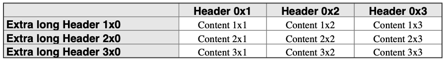

The format of each cell can be adjusted with respect to:
- Font-family and style (size, bold, italic etc.)
- Font- and background-color
- Border thickness and color
In this section we will focus on how to adjust the font and background color. The styld can be adjusted both forthe entire table at once and alse for individual cells. The individual cell style will always override the table cell style.
The primary API to adjust the table style are:
HPDF_RGBColor background);
char *font, HPDF_REAL fsize,
HPDF_RGBColor color, HPDF_RGBColor background);
char *font, HPDF_REAL fsize,
HPDF_RGBColor color, HPDF_RGBColor background);
size_t r, size_t c,
char *font, HPDF_REAL fsize,
HPDF_RGBColor color, HPDF_RGBColor background);
size_t r,
char *font, HPDF_REAL fsize,
HPDF_RGBColor color, HPDF_RGBColor background);
size_t c,
char *font, HPDF_REAL fsize,
HPDF_RGBColor color, HPDF_RGBColor background);
int hpdftbl_set_background(hpdftbl_t t, HPDF_RGBColor background)
Set table background color.
Definition: hpdftbl.c:758
int hpdftbl_set_content_style(hpdftbl_t t, char *font, HPDF_REAL fsize, HPDF_RGBColor color, HPDF_RGBColor background)
Set font style for text content.
Definition: hpdftbl.c:1367
int hpdftbl_set_label_style(hpdftbl_t t, char *font, HPDF_REAL fsize, HPDF_RGBColor color, HPDF_RGBColor background)
Set the font style for labels.
Definition: hpdftbl.c:1344
int hpdftbl_set_row_content_style(hpdftbl_t t, size_t r, char *font, HPDF_REAL fsize, HPDF_RGBColor color, HPDF_RGBColor background)
Set the font style for an entire row of cells.
Definition: hpdftbl.c:1391
int hpdftbl_set_cell_content_style(hpdftbl_t t, size_t r, size_t c, char *font, HPDF_REAL fsize, HPDF_RGBColor color, HPDF_RGBColor background)
Set the font style for content of specified cell.
Definition: hpdftbl.c:1438
int hpdftbl_set_col_content_style(hpdftbl_t t, size_t c, char *font, HPDF_REAL fsize, HPDF_RGBColor color, HPDF_RGBColor background)
Set the font style for an entre column of cells.
Definition: hpdftbl.c:1414
Core table handle.
Definition: hpdftbl.h:272
Specifying fonts and colors
Fonts are specified as a string with the type font family name as recognized by the core Haru PDF library, e.g. "Times-Roman", "Times-Italic", "Times-Bold" etc. As a convenience not to have to remember the exact font name strings the following three font family are defined as HPDF_FF_* where the last part of the name is specified as the following table shows
| Font family | Italic | Bold | BoldItalic |
TIMES | TIMES_ITALIC | TIMES_BOLD | TIMES_BOLDITALIC |
HELVETICA | HELVETICA_ITALIC | HELVETICA_BOLD | HELVETICA_BOLDITALIC |
COURIER | COURIER_ITALIC | COURIER_BOLD | COURIER_BOLDITALIC |
Table 1: Predefined font family and variants
So to use the "Helvetic" font family the constant "`HPDF_FF_HELVETICA`" is used and so on.
Colors are specified in the standard Haru way, i.e as an instance of the structure "`HPDF_RGBColor`". As another convenience the following colors are predefined
#define COLOR_DARK_RED (HPDF_RGBColor) { 0.6f, 0.0f, 0.0f }
#define COLOR_RED (HPDF_RGBColor) { 1.0f, 0.0f, 0.0f }
#define COLOR_LIGHT_GREEN (HPDF_RGBColor) { 0.9f, 1.0f, 0.9f }
#define COLOR_GREEN (HPDF_RGBColor) { 0.4f, 0.9f, 0.4f }
#define COLOR_DARK_GRAY (HPDF_RGBColor) { 0.2f, 0.2f, 0.2f }
#define COLOR_LIGHT_GRAY (HPDF_RGBColor) { 0.9f, 0.9f, 0.9f }
#define COLOR_GRAY (HPDF_RGBColor) { 0.5f, 0.5f, 0.5f }
#define COLOR_SILVER (HPDF_RGBColor) { 0.75f, 0.75f, 0.75f }
#define COLOR_LIGHT_BLUE (HPDF_RGBColor) { 1.0f, 1.0f, 0.9f }
#define COLOR_BLUE (HPDF_RGBColor) { 0.0f, 0.0f, 1.0f }
#define COLOR_WHITE (HPDF_RGBColor) { 1.0f, 1.0f, 1.0f }
#define COLOR_BLACK (HPDF_RGBColor) { 0.0f, 0.0f, 0.0f }
So for example to set the overall default font to 12pt Times Roman with black text on white bottom the following call must be made
...
hpdftbl_set_content_style(tbl,
HPDF_FF_TIMES, 12, COLOR_BLACK, COLOR_WHITE);
...
#define HPDF_FF_TIMES
Definition: hpdftbl.h:53
Since RGB for colors are specified as a flotaing point number in range [0.0, 1.0] and most color table give colors as a integer triple there is exists a macro to make this conversion easier
#define HPDF_COLOR_FROMRGB(r,g,b) (HPDF_RGBColor){r/255.0,g/255.0,b/255.0}
which will allow the easier specification of color such as
#define HPDF_COLOR_FROMRGB(r, g, b)
Definition: hpdftbl.h:116
Using style callbacks
In much the same way as callbacks can be used for specifying content and labels so can a callback be used to specify the style of a cell or the entire table.
A style callback has the following signature
_Bool
_Bool(* hpdftbl_content_style_callback_t)(void *, size_t, size_t, char *content, hpdf_text_style_t *)
Type specification for the content style.
Definition: hpdftbl.h:188
Specification of a text style.
Definition: hpdftbl.h:149
In order for the settings to be applied the callback has to return a boolean TRUE value.
If the callback returns FALSE the settings will not be applied.
The parameters are used as follows:
- The
tag parameter has the same meaning as for content and label callbacks; an optional unique identifier for the table.** The tag parameter should always be checked for possible NULL value since it is not required for a table to have a tag.
- The
r and c arguments are the row and column of the cell the callback is made for
- The
content is the cell content string. The rationale for including this in the style callback is to allow for highligthning in the table of specific data. It could for example be something as simple as wanting to mark all values above a certain threshold with another background color in the table to draw attention.
- Finally the actual style is encompassed by the
hpdf_text_style_t and is defined as the following structure
struct text_style hpdf_text_style_t
Specification of a text style.
enum hpdftbl_text_align hpdftbl_text_align_t
Enumeration for horizontal text alignment.
char * font
Definition: hpdftbl.h:150
HPDF_RGBColor color
Definition: hpdftbl.h:152
HPDF_REAL fsize
Definition: hpdftbl.h:151
hpdftbl_text_align_t halign
Definition: hpdftbl.h:154
HPDF_RGBColor background
Definition: hpdftbl.h:153
The style callbacks can exactly as the content callback be specified for either the entire table or for a specific cell. A cell callback will always override a table callback. The two functions to setup style callbacks are
int
size_t r, size_t c,
int
int hpdftbl_set_content_style_cb(hpdftbl_t t, hpdftbl_content_style_callback_t cb)
Set callback to specify cell content style.
Definition: hpdftbl.c:1489
int hpdftbl_set_cell_content_style_cb(hpdftbl_t t, size_t r, size_t c, hpdftbl_content_style_callback_t cb)
Set cell specific callback to specify cell content style.
Definition: hpdftbl.c:1463
- Note
- Due to som technicalities the style callbacks are called twice per cell. The first call is necessary to setup the background canvas and at that stage the content is not necessarily known since it could be later specified with a content callback. The first time the callback is made the
content parameter is always guaranteed to be NULL
Style callback example
An example of a callback function to set a background color for a header row/column for a table could for example be done as follows
_Bool
if( 0==r || 0==c ) {
style->
font = HPDF_FF_HELVETICA_BOLD;
style->
color = COLOR_BLACK;
if ( c > 0 )
else
} else {
style->
color = COLOR_BLACK;
}
return TRUE;
}
@ CENTER
Definition: hpdftbl.h:140
@ LEFT
Definition: hpdftbl.h:139
and the table setup code can then be written as
void
create_table_ex09(HPDF_Doc pdf_doc, HPDF_Page pdf_page) {
const size_t num_rows = 4;
const size_t num_cols = 4;
HPDF_REAL height = 0;
}
hpdftbl_t hpdftbl_create(size_t rows, size_t cols)
Create a new table with no title.
Definition: hpdftbl.c:586
int hpdftbl_set_colwidth_percent(hpdftbl_t t, size_t c, float w)
Set column width as percentage of overall table width.
Definition: hpdftbl.c:676
int hpdftbl_stroke(HPDF_Doc pdf, const HPDF_Page page, hpdftbl_t t, const HPDF_REAL xpos, const HPDF_REAL ypos, const HPDF_REAL width, HPDF_REAL height)
Stroke the table.
Definition: hpdftbl.c:1945
int hpdftbl_set_content_cb(hpdftbl_t t, hpdftbl_content_callback_t cb)
Set table content callback.
Definition: hpdftbl.c:1050
#define A4PAGE_WIDTH_CM
Definition: hpdftbl.h:100
#define A4PAGE_HEIGHT_CM
Definition: hpdftbl.h:99
#define hpdftbl_cm2dpi(c)
Convert cm to dots using the default resolution (72 DPI)
Definition: hpdftbl.h:129
The resulting table is shown in Figure 10. below.
 Figure 10: Using a style callback to highlight header rows & columns. tut_ex09.c
Using style themes
if you have multiple table in a document it is possible to create a table theme which consists of some core styling of a table that can be reused. The data saved in a theme is defined by the structure hpdftbl_theme with the following definition and members
struct hpdftbl_theme hpdftbl_theme_t
Define a set of styles into a table theme.
Specification for table borders.
Definition: hpdftbl.h:209
Define a set of styles into a table theme.
Definition: hpdftbl.h:424
hpdf_border_style_t * inner_border
Definition: hpdftbl.h:434
_Bool use_header_row
Definition: hpdftbl.h:442
hpdf_text_style_t * title_style
Definition: hpdftbl.h:432
_Bool use_label_grid_style
Definition: hpdftbl.h:440
_Bool use_labels
Definition: hpdftbl.h:438
hpdf_border_style_t * outer_border
Definition: hpdftbl.h:436
hpdf_text_style_t * content_style
Definition: hpdftbl.h:426
hpdf_text_style_t * header_style
Definition: hpdftbl.h:430
hpdf_text_style_t * label_style
Definition: hpdftbl.h:428
This allow the setting of all main font/style setting in one go. This strcture can be set up manually and then applied to a table. However, the recommended way is to first use the "theme getter" function to get the default theme and then modify this default theme as needed. The functions to work with a theme are:
int
int
hpdftbl_theme_t * hpdftbl_get_default_theme(void)
Return the default theme.
Definition: hpdftbl.c:442
int hpdftbl_destroy_theme(hpdftbl_theme_t *theme)
Destroy existing theme structure and free memory.
Definition: hpdftbl.c:561
int hpdftbl_apply_theme(hpdftbl_t t, hpdftbl_theme_t *theme)
Apply a specified theme to a table.
Definition: hpdftbl.c:1569
- Note
- It is the responsibility of the user of the library to destroy the theme structure by ensuring that
hpdftbl_destroy_theme() is called when a theme goes out of scope.
The default font styles for the default theme are shown in table 1.
| Style | Font | Size | Color | Background | Alignment |
| content | HPDF_FF_COURIER | 10 | Black | White | Left |
| label | HPDF_FF_TIMES_ITALIC | 9 | Dark gray | White | Left |
| header | HPDF_FF_HELVETICA_BOLD | 10 | Black | Light gray | Center |
| title | HPDF_FF_HELVETICA_BOLD | 11 | Black | Light gray | Left |
Table 1: Default font styles.
| Theme parameter | Default value |
| use_labels | FALSE |
| use_label_grid_style | FALSE |
| use_header_row | FALSE |
Table 2: Default table structure parameters.
| Border | Color | Width (pt) |
| inner_border | Grey | 0.7 |
| outer_border | Dark Grey | 1.0 |
Table 3: Default border parameters.
- Note
- There is currently no support for serializing a theme to/from a file.
 1.9.3
1.9.3